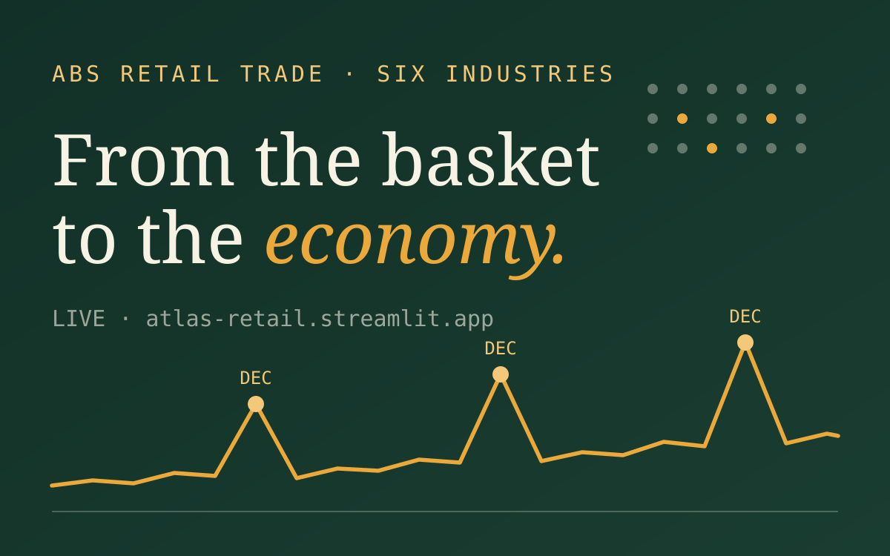

01The brief
Retail data lives at two altitudes that rarely talk to each other: the transaction log (who bought what, together, when) and the national statistics (how the whole industry moved this month). ATLAS puts both in one dashboard - the UCI Online Retail II transactional dataset for basket-level behaviour, and the Australian Bureau of Statistics Retail Trade release (ABS 8501.0) for the macro picture.
We designed against two stated user personas: a retail analyst who wants analytical depth, and a store manager who wants an answer before their coffee goes cold. Every tab had to serve both without patronising either.

02The build
- Prepared and analysed ABS Retail Trade data across six retail industries, producing monthly turnover trends, seasonal decomposition and industry comparison views
- Joined it with basket-level analysis of the UCI Online Retail II dataset - so a spike in the macro series can be interrogated down at product level
- Documented the granularity mismatch between product-level transactions and industry-level aggregates explicitly in the dashboard, rather than letting users draw links the data can't support
- Shipped it as a multi-tab Streamlit app, live at atlas-retail.streamlit.app
03The save
Midway through, a reviewer flagged that our turnover figures looked off. Instead of patching the chart, I cross-verified every calculated figure against official ABS releases and published economic reports - and found a scaling error in how turnover had been ingested.
04Limitations
Two altitudes, one join
Product-level transactions and industry-level aggregates don't share a common key - the linkage is contextual, not relational, and the dashboard says so on the tin.
The basket data isn't Australian
UCI Online Retail II records a UK-based retailer. It demonstrates basket-analysis technique alongside Australian macro trends; it doesn't claim the two describe the same shoppers.
05What it taught me
Cross-checking derived figures against an official source is cheap; shipping a wrong number is not. "Looks right" is not a validation strategy.
Designing for a named persona forces real trade-offs. "Analytical depth vs readability" stops being abstract when you can picture the store manager squinting at your chart.
Stating what a dashboard can't tell you - in the interface itself - builds more trust than any amount of polish.
Group analytics work runs on review culture. The scaling error was caught because someone felt safe saying "this looks wrong" - and fixing it publicly made the team's output stronger.